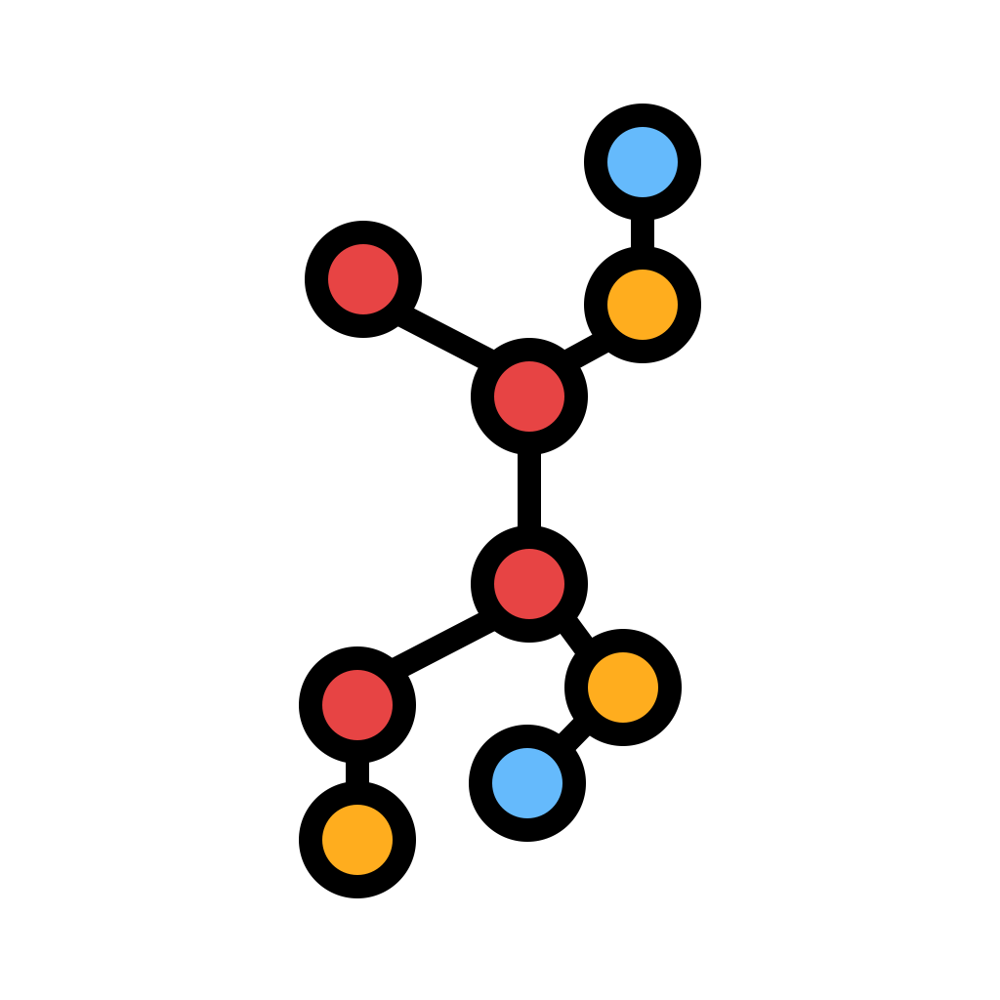

Sentence embedding model
Sentence embedding pre-trained model trained on 1B sentence pairs during the Community week using JAX/Flax for NLP & CV, organized by Hugging Face.

Melusine
Melusine is a high-level Python library for email classification and feature extraction developed by Quantmetry and MAIF.